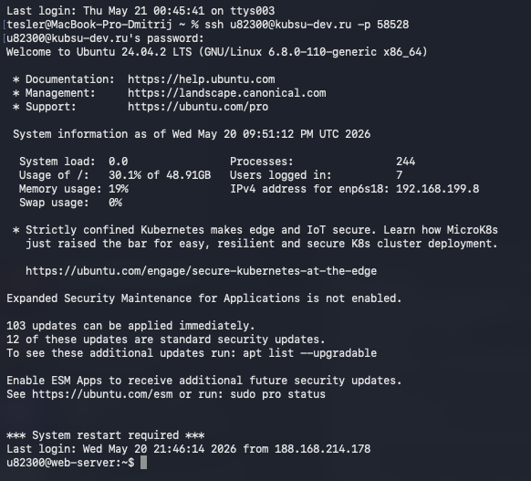
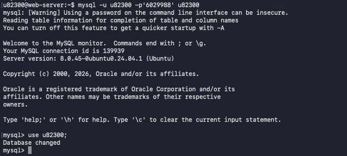
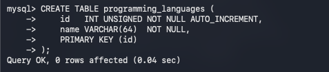
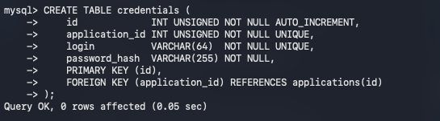
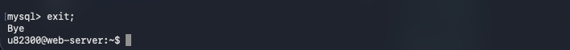

🐚
Развёртывание анкеты
последовательность действий на сервере
Подключаемся к учебному серверу по SSH

Открываем терминал и выполняем команду
ssh u8230@kubsu-dev.ru -p 58528. Это защищённое соединение с удалённым сервером.
Система запрашивает пароль — вводим его (символы не отображаются). После успешной аутентификации попадаем в командную оболочку Ubuntu 24.04 LTS. Сервер показывает приветственное сообщение, загрузку процессора (0.0), использование памяти (19% из доступной), занятость диска (30% от 48.91 GB) и количество активных пользователей (7). Это значит, что мы успешно вошли и готовы выполнять команды. Также видим предупреждение о необходимости перезагрузки системы — это не мешает работе.
Входим в MySQL и выбираем базу данных

Запускаем клиент MySQL:
mysql -u u82300 -p'6029988' u82300. Здесь u82300 — имя пользователя БД, 6029988 — пароль, последний аргумент — имя базы данных.
Появляется предупреждение: «Using a password on the command line interface can be insecure» — это стандартное напоминание, что передавать пароль в открытом виде небезопасно, но в учебной среде допустимо. После подключения видим приветствие MySQL версии 8.0.45. Далее выполняем команду
use u82300; (на скриншоте показана). Теперь мы работаем именно с той базой, где будем создавать таблицы. База пуста, но готова к наполнению.
Создаём таблицу
applications
Выполняем SQL-запрос:
CREATE TABLE applications ( id INT UNSIGNED NOT NULL AUTO_INCREMENT, full_name VARCHAR(150) NOT NULL, phone VARCHAR(32) NOT NULL, email VARCHAR(255) NOT NULL, birth_date DATE NOT NULL, gender VARCHAR(10) NOT NULL, biography TEXT NOT NULL, contract_accepted TINYINT(1) NOT NULL DEFAULT 0, PRIMARY KEY (id) );
Таблица
—
—
—
—
—
—
—
—
Таблица создана успешно и готова принимать данные из формы.
applications хранит основные данные, которые пользователь вводит в анкете. Каждая запись — это одна анкета.—
id — уникальный номер анкеты, присваивается автоматически;—
full_name — полное имя (ФИО), обязательно для заполнения, не более 150 символов;—
phone — контактный телефон;—
email — адрес электронной почты;—
birth_date — дата рождения (только дата, без времени);—
gender — пол: male (мужской) или female (женский);—
biography — текстовое поле для биографии, может быть довольно длинным (до 65535 символов);—
contract_accepted — флаг, подтверждающий согласие с контрактом (0 — не согласен, 1 — согласен), по умолчанию 0.Таблица создана успешно и готова принимать данные из формы.
Создаём справочник
programming_languages
Создаём таблицу:
CREATE TABLE programming_languages ( id INT UNSIGNED NOT NULL AUTO_INCREMENT, name VARCHAR(64) NOT NULL, PRIMARY KEY (id) );
Это небольшой справочник. В нём будет всего 12 строк — по одному на каждый язык программирования из выпадающего списка формы. Поле
name хранит название языка (например, 'Python', 'Java'). Таблица нужна, чтобы не дублировать названия языков в каждой анкете, а связывать их через идентификаторы. Такой подход уменьшает объём данных и упрощает изменение названий в будущем.
Создаём связующую таблицу
application_languages
Выполняем:
CREATE TABLE application_languages ( application_id INT UNSIGNED NOT NULL, language_id INT UNSIGNED NOT NULL, PRIMARY KEY (application_id, language_id), FOREIGN KEY (application_id) REFERENCES applications(id), FOREIGN KEY (language_id) REFERENCES programming_languages(id) );
Это связующая таблица для отношения «многие ко многим». Одна анкета может выбрать несколько любимых языков, и один язык может быть выбран в нескольких анкетах. Поля
application_id и language_id — внешние ключи, которые ссылаются на соответствующие таблицы. Составной первичный ключ гарантирует, что пара (анкета, язык) не повторится. Благодаря этому мы сможем хранить все выбранные языки для каждой анкеты в отдельной таблице, не раздувая основную.
Наполняем справочник языков

Вставляем все языки одной командой:
INSERT INTO programming_languages (id, name) VALUES (1, 'Pascal'), (2, 'C'), (3, 'C++'), (4, 'JavaScript'), (5, 'PHP'), (6, 'Python'), (7, 'Java'), (8, 'Haskell'), (9, 'Clojure'), (10, 'Prolog'), (11, 'Scala'), (12, 'Go');
Здесь мы явно указываем идентификаторы от 1 до 12 — это важно, потому что в HTML-форме у каждого
<option> прописано значение, совпадающее с этими ID. Таким образом, когда пользователь выбирает, например, Python (value="6"), сервер получает число 6 и сразу знает, какой язык вставить в связующую таблицу. Запрос вставляет 12 строк, дубликатов нет (все ID уникальны). Теперь справочник полностью готов.
Создаём таблицу учётных данных
credentials
Создаём таблицу для хранения логинов и паролей:
CREATE TABLE credentials ( id INT UNSIGNED NOT NULL AUTO_INCREMENT, application_id INT UNSIGNED NOT NULL UNIQUE, login VARCHAR(64) NOT NULL UNIQUE, password_hash VARCHAR(255) NOT NULL, PRIMARY KEY (id), FOREIGN KEY (application_id) REFERENCES applications(id) );
Эта таблица связывает анкету с учётными данными для входа. Поле
application_id уникально — это означает, что к одной анкете можно привязать не более одной учётной записи. Поле login тоже уникально, чтобы не было конфликтов имён. Вместо хранения пароля в открытом виде мы будем хранить его хеш (password_hash). При входе пользователь вводит логин и пароль, сервер хеширует введённый пароль и сравнивает с тем, что в базе. Такой подход обеспечивает базовую безопасность: даже если база данных скомпрометирована, злоумышленник не увидит реальные пароли.
Создаём таблицу
admin_credentials для администратора
Выполняем SQL-запрос:
CREATE TABLE admin_credentials ( id INT UNSIGNED NOT NULL AUTO_INCREMENT, login VARCHAR(64) NOT NULL UNIQUE, password_hash VARCHAR(255) NOT NULL, PRIMARY KEY (id) );
Эта таблица предназначена для хранения учётных данных администратора. В ней будут храниться логин и хеш пароля для доступа к панели управления. Поле
login уникально, что позволяет идентифицировать администратора. Доступ к этой таблице имеют только доверенные лица. В дальнейшем мы добавим в неё запись для входа в админку (например, администратор admin с сгенерированным хешем). Благодаря этой таблице мы сможем защитить страницу статистики и редактирования всех анкет.
Завершаем работу с MySQL

Выполняем команду
exit; в консоли MySQL.
После этого мы возвращаемся в обычную командную оболочку сервера (bash). Теперь база данных полностью структурирована: есть таблица для анкет, справочник языков, связующая таблица, таблица учётных данных пользователей и таблица учётных данных администратора. Все ограничения целостности (внешние ключи) заданы. Система готова к приёму данных из CGI-скриптов и к работе с панелью администратора.
Проверяем сохранённые данные в таблицах
applications и credentials
Выполняем два запроса:
SELECT * FROM applications; и SELECT * FROM credentials;
Первый запрос показывает все заполненные анкеты. В таблице
Второй запрос — к таблице
Таким образом, мы убедились, что данные успешно сохраняются, а пароли надёжно защищены. Система работает корректно. Таблица
applications сейчас три записи. Видим, что для каждой анкеты сохранились ФИО, телефон, email, дата рождения, пол, биография и флаг согласия с контрактом (1 — согласен).Второй запрос — к таблице
credentials. Здесь хранятся учётные данные для входа обычных пользователей. Сейчас есть одна запись, привязанная к анкете с id = 3. Логин — SRt1n2F5, а пароль сохранён не в открытом виде, а в виде хеша (password_hash). При входе пользователь вводит свой пароль, сервер хеширует его и сравнивает с этим значением. Если совпадает — доступ разрешён.Таким образом, мы убедились, что данные успешно сохраняются, а пароли надёжно защищены. Система работает корректно. Таблица
admin_credentials пока пуста — в неё будет добавлена запись администратора отдельно.
⦿ 完